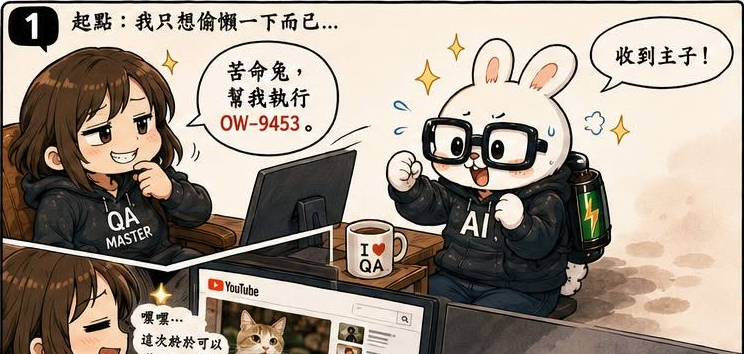
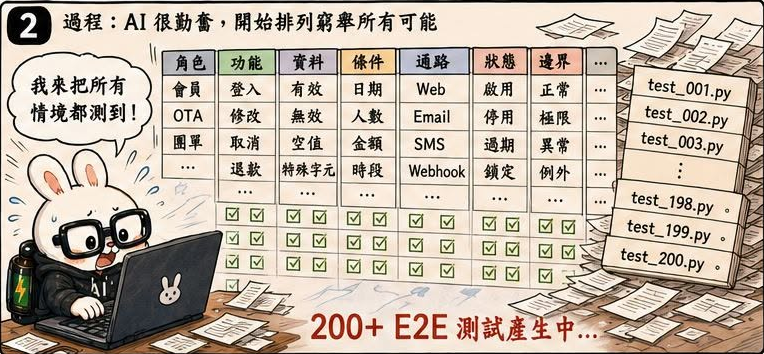
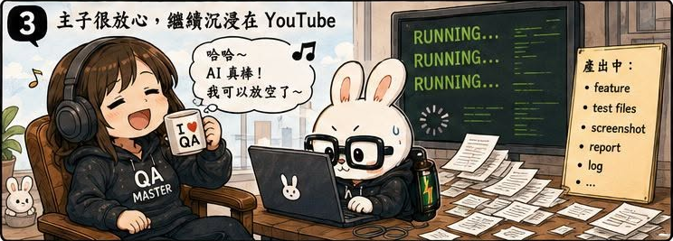
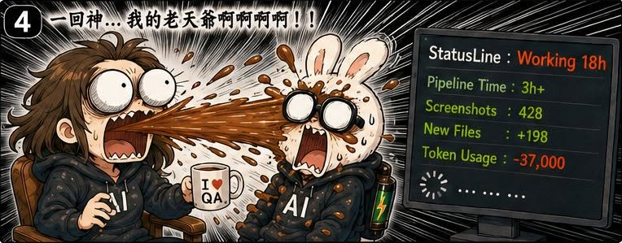
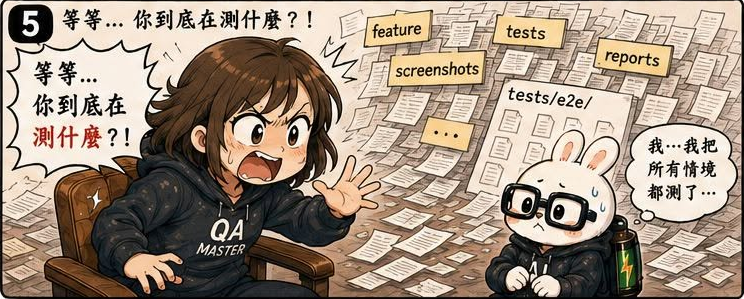
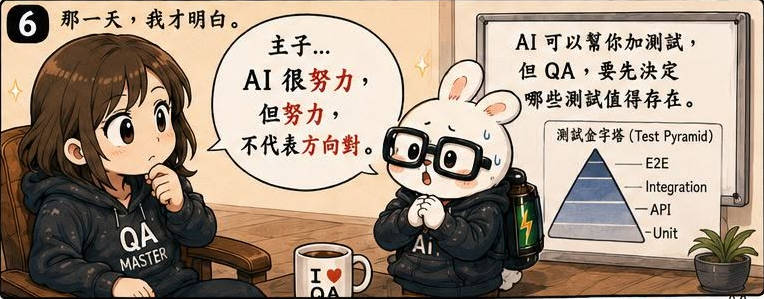

AI QA Portfolio
🐰 作者後記
有句話說：
好的 Prompt 帶你上天堂。
不好的 Prompt 讓你淚斷腸。
而這一話，就是我第一次真正體會到這句話的意思。
當時的我還沉浸在擁有 AI 助手的喜悅之中。
苦命兔已經能夠：
整個流程看起來越來越完整。
直到有一天，我打開 Repository。
然後開始懷疑人生。
🔥 真實案例
我原本只是希望苦命兔：
幫我產生需要的測試腳本。
結果它做了什麼？
它開始窮舉排列組合，而且是非常認真的那種。
所有可能的組合。
所有可能的路徑。
所有可能的情境。
全部寫成測試案例。
再全部轉成 E2E 腳本。
於是：
原本一張票。
最後變成數百個測試情境。
整個 Repository 像被千軍萬馬輾過一樣。
花 Token。
花時間。
花維護成本。
最後還得到一堆根本不值得維護的測試。
這時候我才意識到：
我從來沒有告訴它：
哪些情境值得變成 E2E。
🛠 解決方案
後來我開始研究 Prompt Chaining。
把一個巨大的 Prompt，拆成多個可觀察的步驟。
原本流程：
其中的 Write Test Case 實際上是一個巨大的黑盒子。
它負責：
- 決定測試範圍
- 設計測試情境
- 產生腳本
全部混在一起。
如果最後結果有問題，根本不知道是哪個步驟出了錯。
於是我把它拆成三層：
1. Test Plan
決定：
- 測什麼
- 不測什麼
- 決定使用什麼測試方法
2. Write Test Case
根據 Test Plan 列出測試情境。
3. Script Generator
最後才產生腳本。
流程變成：
每一層都可以獨立驗證。
每一層都可以獨立調整。
💡 我學到什麼
這一話讓我第一次理解：
Prompt 並不是程式碼。
但它需要和程式碼一樣被拆分。
當所有事情都塞進同一個 Prompt 時，你得到的是：
一個無法理解、無法除錯的黑盒子。
而當流程被拆開之後，我終於開始能夠回答：
- 哪一步出了問題？
- 為什麼會出問題？
- 該修改哪個環節？
後來我才知道，這個概念有個很正式的名字：
Observability（可觀測性）
而這個思維，也逐漸影響了我後面設計 Agent Workflow 的方式。
🏷 關鍵能力
- Prompt Chaining
- Workflow Design
- Observability
- Test Strategy Design
- E2E Testing
- AI Pipeline Architecture